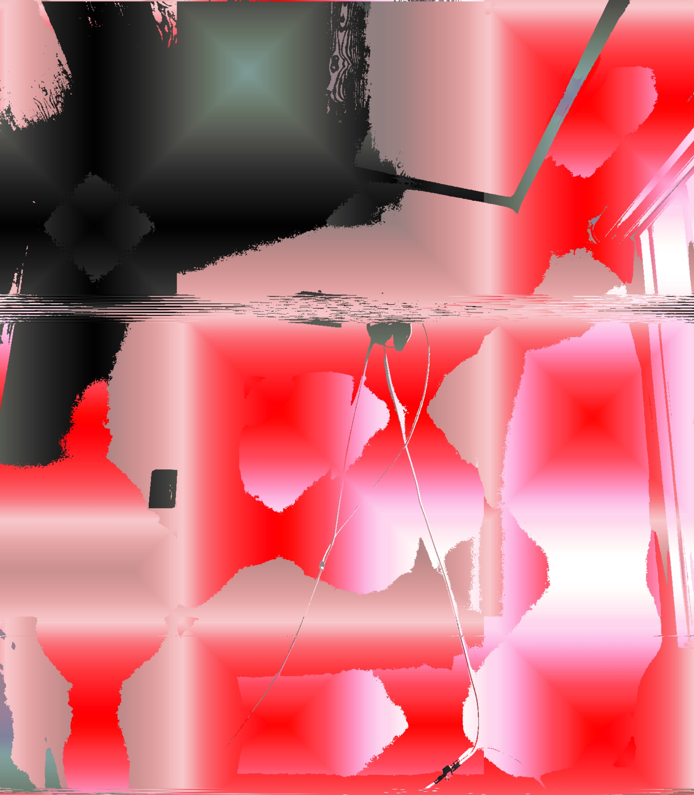

¿QUE ES?
Es un estilo de imagen donde la realidad se ve alterada, como si se hubiera dañado.
Los resultados de estas imagenes la mayoria son inquientantes porque no siempre se entiende que se esta viendo 
Volver